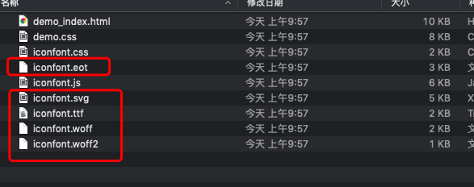
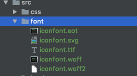
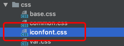
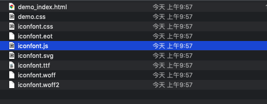

前言
项目开发中，是避免不了使用小图标的，那么国内比较好用的图标网站当属iconfont了，下面我们将详细介绍如何使用。
iconfont选择所需图标
2、把所需要的添加进入购物车
3、添加所需图标完毕后，点击右上角的购物车图标
4、下载代码
5、下载的代码解压后

图片上圈起来的都是字体文件
6、项目中新建一个font文件夹用来放置字体文件

7、取出iconfont.css文件放入css文件夹

8、打开iconfont.css文件，配置正确的字体文件路径
// 这里要根据自己的项目配置正确的字体路径：../font/iconfont.eot
@font-face {font-family: "iconfont";
src: url('../font/iconfont.eot?t=1554343058030'); /* IE9 */
src: url('../font/iconfont.eot?t=1554343058030#iefix') format('embedded-opentype'), /* IE6-IE8 */
url('这里省略的base64字符...') format('woff2'),
url('../font/iconfont.woff?t=1554343058030') format('woff'),
url('../font/iconfont.ttf?t=1554343058030') format('truetype'), /* chrome, firefox, opera, Safari, Android, iOS 4.2+ */
url('../font/iconfont.svg?t=1554343058030#iconfont') format('svg'); /* iOS 4.1- */
}
// 这个文件是下载字体时系统自带的
.iconfont {
font-family: "iconfont" !important; // 这里的iconfont 和上面定义的font-family一定要是一样的
font-size: 16px;
font-style: normal;
-webkit-font-smoothing: antialiased;
-moz-osx-font-smoothing: grayscale;
}
// 下面是自动生成的图标类，可以直接引用
.icon-icon_add:before {
content: "\eb8f";
}
.icon-icon_addmessage:before {
content: "\eb90";
}
.icon-icon_addresslist:before {
content: "\eb91";
}
.icon-icon_affiliations_li:before {
content: "\eb92";
}
9、项目中使用
<!-- 这个文件一定要正确引入 -->
<link rel="stylesheet" href="../../css/iconfont.css">
/* 正确使用一个icon */
<i class="iconfont icon-icon_add"></i>
这样我们就可以愉快的使用icon了
效果展示：
【font-class】
我们引用icon的方式是通过class的方式引入的。具有以下特点：
- 兼容性良好，支持 IE8+，及所有现代浏览器。
- 相比于 Unicode 语意明确，书写更直观。可以很容易分辨这个 icon 是什么。
- 因为使用 class 来定义图标，所以当要替换图标时，只需要修改 class 里面的 Unicode 引用。
- 不过因为本质上还是使用的字体，所以多色图标还是不支持的。
[注意] 之所以兼容IE8+是因为使用了before伪元素
【Symbol 引用】
这是一种全新的使用方式，应该说这才是未来的主流，也是平台目前推荐的用法。
这种用法其实是做了一个 SVG 的集合，与class引入相比具有如下特点：
- 支持多色图标了，不再受单色限制。
- 通过一些技巧，支持像字体那样，通过 font-size, color 来调整样式。
- 兼容性较差，支持 IE9+，及现代浏览器。
- 浏览器渲染 SVG 的性能一般，还不如 png。
【使用方式】
引入下载下来的iconfont.js到相应文件夹

HTML文件中引入iconfont.js
<script src="../../js/iconfont.js"></script>
HTML中使用svg
<!DOCTYPE html>
<html lang="en">
<head>
<meta charset="UTF-8">
<title>font</title>
<link rel="stylesheet" href="../../css/iconfont.css">
<style>
/* 添加svg样式 */
.icon {
width: 1em;
height: 1em;
vertical-align: -0.15em;
fill: currentColor;
overflow: hidden;
}
</style>
</head>
<body>
<!-- 引入svg -->
<svg class="icon" aria-hidden="true">
<use xlink:href="#icon-icon_addresslist"></use>
</svg>
<script src="../../js/iconfont.js"></script>
</body>
</html>
现在页面上也可以正确渲染图标了。
小结
目前来说，常用的方法就是上面两种了，我们团队目前使用的是class方式引用。